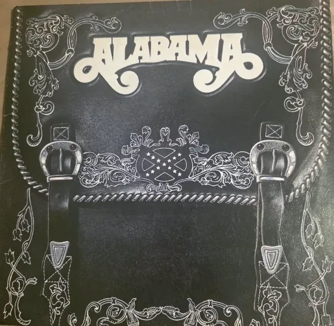

Vinyl Records
Alabama - Alabama (Self-Titled) - Vinyl LP Record - Used
$10.00💳 Buy now with card
The self-titled vinyl LP "Alabama" from country supergroup Alabama, with a striking black cover designed like tooled leather saddlebags with silver buckles. A great find for country music and vinyl collectors.
Features & benefits
- Album: Alabama (self-titled) by Alabama
- Eye-catching tooled-leather saddlebag cover art
- Vinyl record included in its sleeve
- Pre-owned: see photos for condition
- 🔒 Secure checkout
- 🚚 Ships from Denver, Colorado (USA)
- ↩️ 30-day returns
Questions? Call or text +1 720 799 4089 or email info@akiliwomarketplace.com